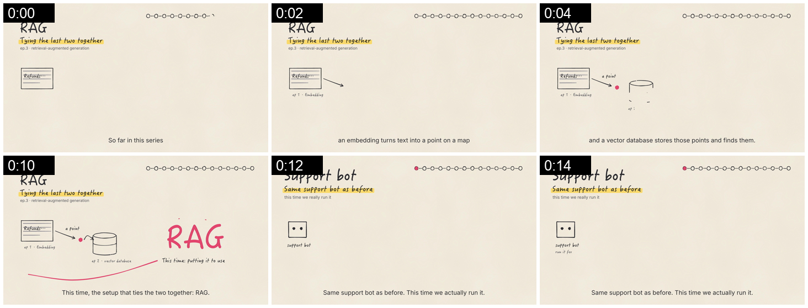

AI Term Explainer
Short films that explain one AI word in plain language, made by a loop of agents that check each other.
What each film says
Every episode answers the same 10 questions in the same order: where it’s used before what it is, the tech before the money, and the risks last.
- 1Tech: what it is
1What problem it solves
A real scene: where does the old way get stuck?
2What it is
One analogy, and where does the name come from?
3How to use it
Three steps or fewer. Then: build it, or buy it?
- 2Business: who makes money
4The chain
Who sells it, who stores it, who buys it?
5Business model
How does each layer charge, and is the margin thick?
6Players
Which big tech companies, and which startups?
7Barriers
Easy to grasp. What makes it hard to do well?
8Horizontal or vertical
Sold to every industry, or built deep for one?
9Take one company apart
How does one startup actually do it, in public sources?
- 3Risk: will it last
10Risks and trends
Eaten by models, commoditized, bundled by platforms, replaced, or hit by compliance?
One line to rememberWhat it is, not what it does.
How each film is made
Five steps to make it, then a check loop before I watch it.
Make
1 Script10-step framework, every number sourced. A non-tech agent checks it.
2 Board5 hand-drawn boards; never the same one twice in a row.
3 Real dataThe example really runs through the API; real screens go on paper.
4 Shot listEvery shot planned first; the lint must show no red.
5 VoiceVoiceover checked by speech recognition, then a frame per scene.
Check
Machine checkstills · blanks · blue · camera
Independent reviewer7 checks · score 1–10 · top 3Never saw the making. Sees only what a viewer sees.
Fix + re-renderevery issue fixed or explained
Re-checkcheck again, a frame per fix
Back to the machine check, up to 3 rounds; a new reviewer if more than 3 shots changed.
Janet watchesAny leftovers are listed.
What worked goes back into the skill.
What the reviewer sees
Every cut is sampled into contact sheets, one frame every 2 seconds. The reviewer reads only these, the subtitle timeline and the real data.

Episodes
- Ep 1EmbeddingAn embedding turns things into meaning coordinates. Once you have them, you can find things by meaning.10:30 · Watch on YouTube ↗
- Ep 2Vector databaseA warehouse that stores points, and can quickly find the few closest ones.11:21 · Watch on YouTube ↗
- Ep 3RAGRAG means retrieve first, then generate. It lets the AI take an open-book exam.16:06 · Watch on YouTube ↗
- Ep 4Long context vs RAGWhen to skip retrieval and paste the whole thing in.13:18 · Watch on YouTube ↗
- Ep 5Tool useThe model writes a note; the harness runs the tool and hands back the receipt.17:43 · Watch on YouTube ↗
- Ep 6MCPOne universal plug: write a tool once, and every AI can use it.5:36 · Watch on YouTube ↗
The English films are on YouTube @JanetMao. See all episodes →